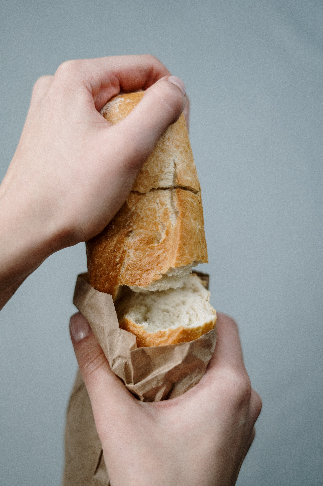

Today, another parade of Jews passed through Himmel Street. I decided to do as Herr Huberman had done before. I packed a bag of bread, and Liesel and I biked ahead of a parade of Jews and dropped bread on the road for them to take. We hid in the trees so the soldiers wouldn’t see us, but one of them spotted us anyway, so we had to run through the trees. Eventually a soldier caught up to Liesel, but didn’t do anything except kick her.
It was satisfying to do something for the Jews and defy the Fuhrer’s will. In a way, it felt like I was retaliating against the Fuhrer for taking my father.
My father has been enlisted in the German army. Mother says it’s because he refused to let the coat men take me to the special Nazi school. Why do they have to take Father away like this?
Part of me is beginning to hate the Fuhrer. I hate him. He couldn’t take me, so he’s taking my father instead.
There is a new girl on Himmel Street, Her name is Liesel Meminger, and she’s been adopted by the Hubermanns next door. On her first day playing soccer with us, she blocked me from scoring a penalty, breaking my eighteen-shot streak of scoring penalties. She really is something.
I’ve already decided I like her, and we’re going to be best friends. I’m excited to see what sort of mischief we get up to together.